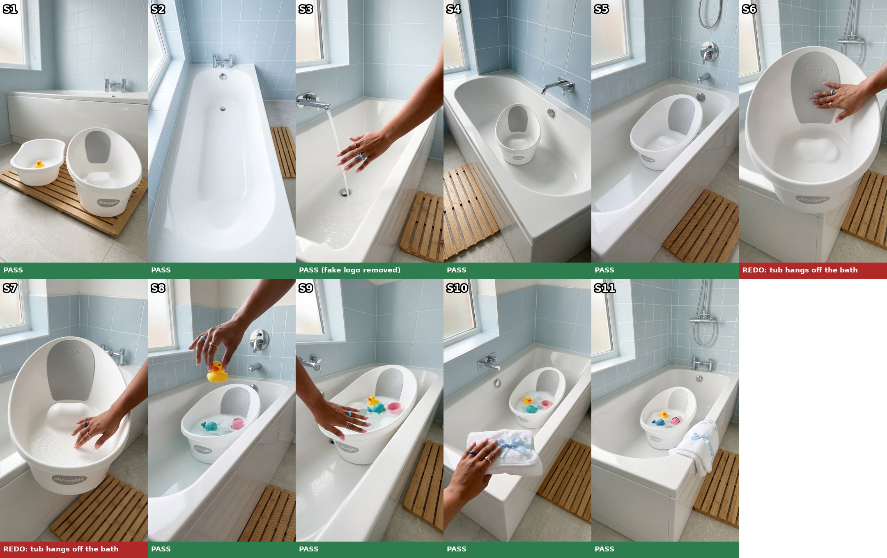
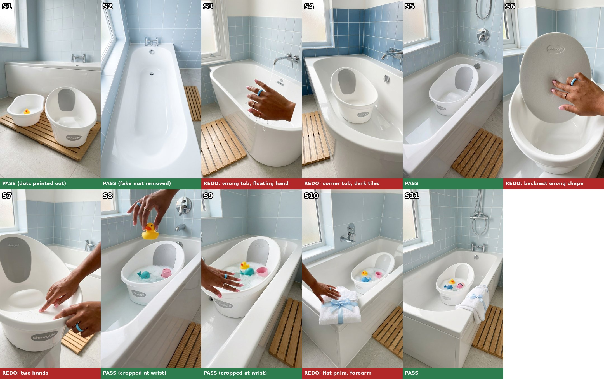
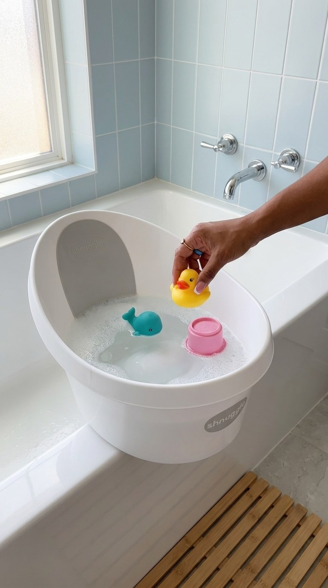
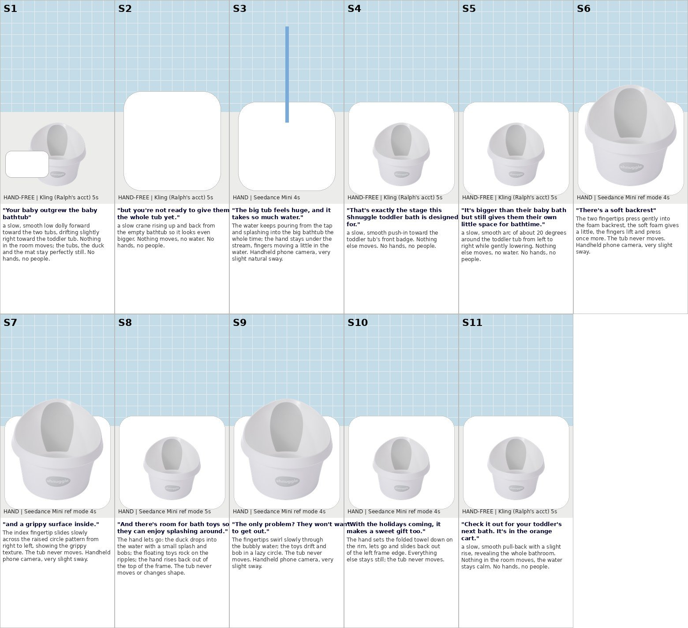
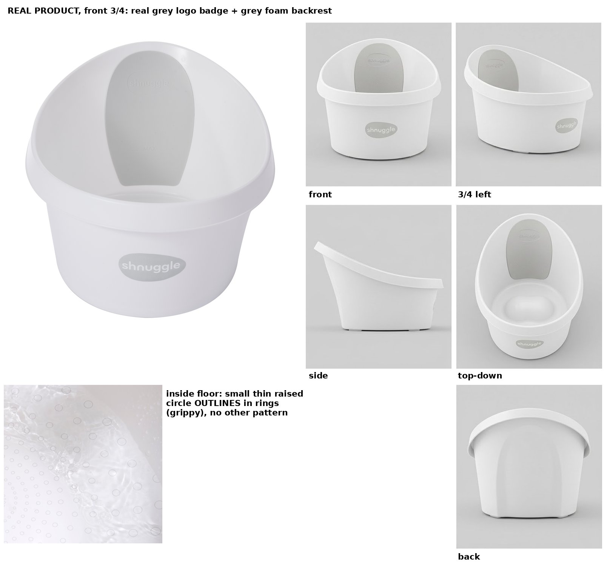

Grace · Shnuggle Toddler Bath Tub · 21 Oct 2026
Nothing has been spent. Stills, test clip and the cut will appear on this same page, newest on top.
Round 3 · 5 redos · Kie spent $1.53 · forearm now allowed (your call)
S3, S4 and S10 now pass (an invented "shnuggle" logo on the S3 bathtub was painted out for free). S8 and S9 are back to their uncropped versions, since the forearm is fine. S6 now has the right backrest shape and S7 a single hand, but in both the toddler tub hangs off the corner of the bathtub over the floor mat. A crop would mean enlarging about 1.9x, which goes soft. The new prompts frame them as tight close-ups looking down into the tub, so the base, the bathtub edge and the floor are out of frame.
OK to redo S6 and S7 for $0.18 (2 × $0.09)? The job would then be $3.64 (stills $1.71 + clips $1.93). Kie balance $6.40.

Round 2 · all 11 stills · Kie spent $1.08 (S8 twice + 10 stills)
I checked every still at full size. Free fixes are done: the wrong floor dots in S1 painted out, an invented "shnuggle" mat in S2 removed, and S8 and S9 cropped so the frame edge cuts at the wrist. S5 and S11 pass as they are.
Five fail, and a crop or paint can't fix them:
New prompts: every redo gets three approved frames as room references so the bathtub stays the same; S6 spells out that the backrest is a panel set into the back wall; S7 and S10 say one hand and a real grip. OK to redo these 5 for $0.45 (5 × $0.09)? That brings the job to $3.46 against the $3.01 approved so far. The shared Kie balance is $2.33 and the rest needs $2.38 (redos $0.45 + clips $1.93). Other sessions draw on it too, so please top up Kie by about $1 before the clips.

Round 1 · test still S8 · redo approved and passed
Approved (V1, no Kling: all clips on Seedance Mini, new total $2.92). The first still got the tub, backrest, badge, duck grip, rings, nails and room right, but two things fail, and a crop can't fix them:
The prompt now says where the tub stands (on the bottom of the big bathtub, never on the rim) and that the frame edge cuts across the wrist. The same placement line goes into every other shot of the tub in the bathtub. OK to redo S8 for $0.09? Then the other 10 stills follow, built off it.

Defaults unless you say otherwise: Grace's hands as in the last Shnuggle videos (pink French tips, sky-blue birthstone ring, small gold ring, no bracelet), Grace C voice, no on-screen text, no child on screen, no plug shown.
V1, recommended · about 31 s · grade 3.3
Blue = added for Grace's structure: a pain beat, a bragging honest line, a real reason (holidays, gift buyers buy more), and her close. One brief line dropped for length.
Version A, the brief word for word · about 26 s · grade 4.7
Flags if you pick A: no pain beat, no honest line, no urgency, and no "It's in the orange cart." close.
Every claim checks out against the listing and brand site (soft foam backrest, grippy inside, "needs far less water than filling the big bath"). The hook is the brief's, not a library row; library options if you want one instead: H071 "I did not think there was a difference until I put them next to each other", H154 "This is such an easy upgrade for bath time".
New room so nothing repeats the earlier Shnuggle videos: pale powder-blue tiles, white built-in tub, oak bath mat, bright daylight. The brief's "talk to camera" shot becomes water filling the big tub (no face, same route as before). 6 hand shots, 5 hand-free.
| # | Words | Shot | Type |
|---|---|---|---|
| S1 | Your baby outgrew the baby bathtub | Low dolly toward a plain infant tub (duck inside) next to the Shnuggle on the bath mat | HAND-FREE Kling |
| S2 | but you're not ready to give them the whole tub yet. | Crane rising over the huge empty bathtub | HAND-FREE Kling |
| S3 | The big tub feels huge, and it takes so much water. | Water pours into the big tub, Grace's hand tests the stream | HAND Seedance |
| S4 | That's exactly the stage this Shnuggle toddler bath is designed for. | Push-in on the Shnuggle standing inside the big tub, badge to camera | HAND-FREE Kling (tested vs Seedance first) |
| S5 | It's bigger than their baby bath but still gives them their own little space for bathtime. | High arc looking into the roomy tub inside the big bathtub | HAND-FREE Kling |
| S6 | There's a soft backrest | Two fingertips press the grey foam backrest | HAND Seedance ref |
| S7 | and a grippy surface inside. | Fingertip slides over the raised circle floor pattern | HAND Seedance ref |
| S8 | And there's room for bath toys so they can enjoy splashing around. | Hand drops a duck into the filled tub, toys bob (riskiest: made first) | HAND Seedance ref |
| S9 | The only problem? They won't want to get out. | Fingers swirl the bubbly water, toys drift | HAND Seedance ref |
| S10 | With the holidays coming, it makes a sweet gift too. | Hand sets a folded hooded towel with a ribbon bow on the rim | HAND Seedance ref |
| S11 | Check it out for your toddler's next bath. It's in the orange cart. | Pull-back on the ready bathtime setup, one tub | HAND-FREE Kling |

Every tub still gets this sheet, built free from the real Shnuggle photos: the big front 3/4 photo, front, side, top, back and the real grippy floor. Hand clips run in reference mode so the video model keeps seeing the real tub; nothing is pasted on.

| Item | Qty | Cost |
|---|---|---|
| Stills, Gemini 3 Pro Image (S8 first alone, then the rest built off it) | 11 × $0.09 | $0.99 |
| Hand clips, Seedance 2.0 Mini (S8 test first) | 25 s × $0.041 | $1.03 |
| Kling vs Seedance test on S4 (Seedance side) | 4 s × $0.041 | $0.16 |
| Kie total (balance $3.68) | $2.18 | |
| Kling, your account: 5 hand-free clips (checked before and after) | 5 × 5 s | ~160 credits |
| ElevenLabs Grace C + speech check | ~590 chars | plan |
Order: voiceover, S8 still, then the other stills for your look on this page before any clip, S8 test clip with every check, the rest, cut, QC, coach compare, AI finish, Drive. About 1.5 hours of work after your OK, plus your still review.